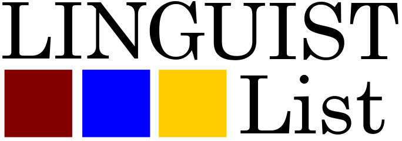

Rutgers University · New Brunswick, NJ · 2027
We are pleased to announce that the 12th iteration of the
Workshop on Turkic and Languages in Contact with Turkic (TU+12)
will be hosted by the Department of Linguistics at Rutgers University.
The workshop will be held at Rutgers University in New Brunswick, NJ, on
April 17-18, 2027 in-person. The abstract submissions are now
open.
TU+ is an annual workshop focusing on all aspects of
linguistic research on Turkic languages, as well as on
languages in contact with Turkic and on languages spoken in
regions where Turkic languages are spoken. TU+ showcases
theoretically informed and data-driven work across phonology,
morphology, syntax, semantics, pragmatics, psycholinguistics,
neurolinguistics, historical linguistics, and computational approaches.
This year we would like to especially encourage phonologically-
and phonetically-oriented contributions.
ⓘ Note
Since 2019, papers presented at TU+ have been invited to appear in an online proceedings volume distributed by the Linguistic Society of America.
Milestone
Date
abstract submission deadline
December 22, 2026 - 11:59 PM EST
notification of acceptance
January 31, 2027 - 11:59 PM EST
workshop
April 17–18, 2027
Please review our Code
of Conduct before participating.
Student Organisers (Rutgers)
zoe.katz@rutgers.educkh51@scarletmail.rutgers.eduutku.zobarlar@rutgers.edumerlin.udinov@rutgers.eduFaculty Advisor
Program Committee
For information on earlier editions, proceedings,
and history, see the permanent site.
Email the organisers at turkicworkshop12@gmail.com.
We’re happy to help with submissions, accessibility, and logistics. You
can also join our Google
Groups to receive updates.
